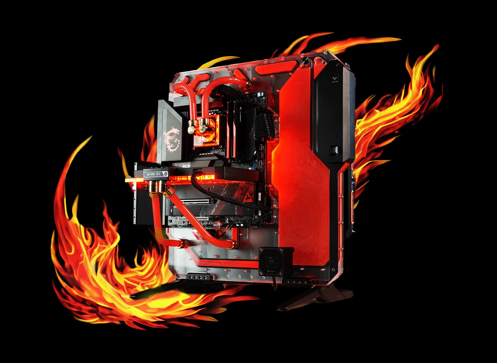

Какой нужен ПК для ETS2 и как поднять FPS
Хочешь стабильные 60 FPS в Euro Truck Simulator 2, без лагов, зависаний и вылетов? Вот всё, что нужно знать о системных требованиях и настройках графики — без модов и без лишнего.
🔧 Минимальные и рекомендуемые системные требования
Минимальные:
- 🧠 Процессор: Intel i5-6400 / Ryzen 3 1200
- 💾 ОЗУ: 8 ГБ
- 🎮 Видеокарта: GTX 660 / RX 460
- 💽 Место на диске: 25 ГБ
Рекомендуемые:
- 🧠 Процессор: i5-9600 / Ryzen 5 3600
- 💾 ОЗУ: 12 ГБ+
- 🎮 Видеокарта: GTX 1660 / RX 590
- 🖥 Windows 10 x64
⚙️ Оптимальные графические настройки в ETS2
- 📏 Масштабирование: 100–150%
- 🎯 Сглаживание: TAA включено
- 🌫 SSAO, DOF, Motion Blur — выключить
- 🌗 Тени и отражения: низкие или средние
- 🚦 Вертикальная синхронизация: выкл.
- 🎮 Ограничение FPS: 60
🖥 Настройки в панели NVIDIA
- 🔋 Режим питания: макс. производительность
- 🎨 Качество текстур: High Performance
- 📉 Тройная буферизация: включена
💡 Советы для лучшего FPS
- 🧼 Закрой фоновые приложения (Discord, браузер)
- 📦 Поставь игру на SSD — загрузка станет быстрее
- 🧊 Следи за температурой CPU/GPU
- 🎯 Обнови драйверы видеокарты (NVIDIA/AMD)
ETS2 может идти даже на слабом ПК, если правильно настроить. Но с хорошим железом и грамотной оптимизацией ты получишь плавную, красивую и стабильную картинку даже в дождь и колоннах.
Почитать дальше:
